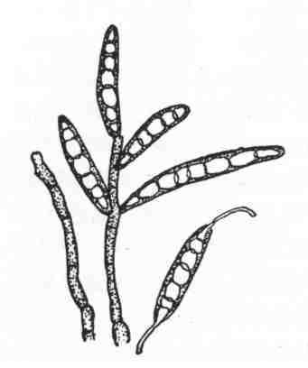

水稻胡麻斑病
病害别名：胡麻叶枯病
为害部位：秧苗、叶片、穗部
病害性质：一般病害
病原：稻蠕孢菌(Helminthosporium oryzae Breda.de Hann)水稻胡麻斑病病原菌分生孢子梗和分生孢子
病害表现：在水稻整个生育期都可发生胡麻斑病。种子发芽期芽鞘受害，变成褐色，重者枯死。稻株以叶片受害最普遍，主要在叶片上散生许多如芝麻粒大小的病斑。病斑中央为灰褐色至灰白色，边缘为褐色，周围有黄色晕圈，病斑的两端无坏死线，严重时，病斑互相融合成不规则的大病斑，病叶片由叶尖逐渐向下干枯，以至整株枯死。穗预受害，为褐色或灰褐色，造成枯穗。谷粒早期受害，重者全粒变灰黑色，造成瘪谷。
水稻胡麻斑病病叶
 水稻胡麻斑病放大
水稻胡麻斑病放大
发病规律：病菌以菌丝和分生孢子在病谷和病稻草上越冬，次年稻草上的分生孢子借风传播到秧田和大田，由稻苗表皮或气孔侵人。播种病谷，谷壳上潜伏的菌丝能直接侵害幼苗。在水稻整个生长期间，病株上形成的大量分生孢子均可再侵染。一般土壤缺肥、缺钾、沙质土、酸性土和长期积水田发病较重。在温度25－30℃条件下，只要有短时间的水滴或饱和湿度，即可满足分生孢子的萌发和侵染。
病害防治: 1．种子消毒 用强氯精浸种，方法同稻瘟病。2．加强肥水管理 对沙质土应多施有机肥，酸性土可施石灰，禾苗生长缺氮要增施氮肥和钾肥或人粪尿、草木灰等。在灌溉方面，既要避免深水灌溉和长期积水,又要防止缺水受旱而诱发胡麻斑病。